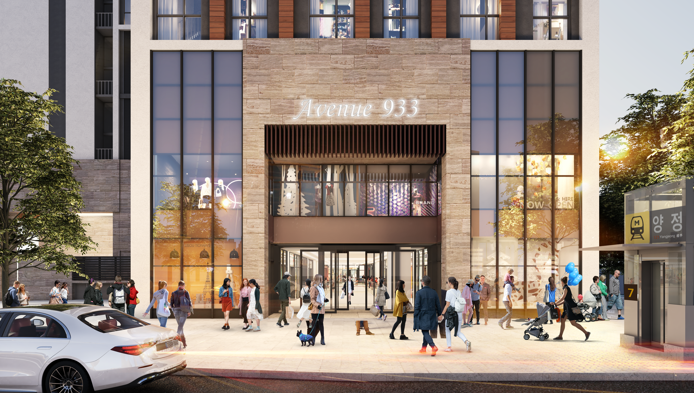
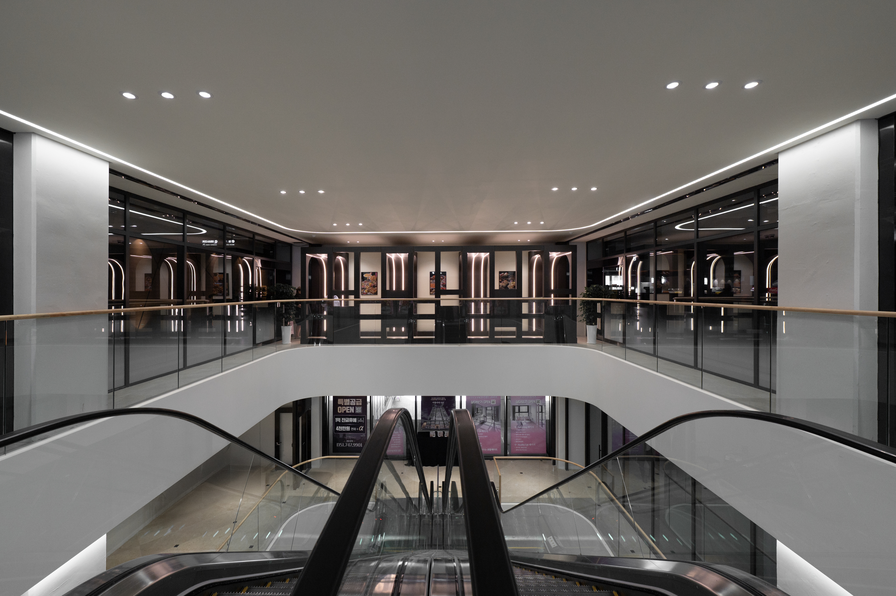

AVENUE 933 · 1F MEDICAL
양정역 직통 연결1층 메디컬 특화 공간
병·의원 개원을 위한 접근성과 공간 활용을 애비뉴933에서 확인하세요.
※ 상기 이미지는 이해를 돕기 위한 이미지로 실제 현장과 다를 수 있습니다.
MEDICAL POSITIONING
상가의 한 구역이 아니라,1층 전체를 메디컬 중심으로 봅니다.
애비뉴933의 메디컬 핵심은 ‘병원이 들어갈 수 있는 상가’라는 설명보다 환자 접근과 진료 운영을 한 번에 검토할 수 있는 1층 공간에 있습니다.
아래 두 장의 핵심 자료를 중심으로 위치, 이동 흐름, 공간 활용, 개원 이후 지원까지 순서대로 확인할 수 있도록 정리했습니다.
CORE DOCUMENT 01
첫 번째로 볼 것은‘어떻게 도착하는가’입니다.
처음 방문하는 환자와 보호자가 복잡하게 우회하지 않고 상가에 도착할 수 있는지, 재방문이 필요한 진료에서도 이동 부담이 적은지가 메디컬 입지의 기본입니다.

ACCESS & PATIENT FLOW
환자 기준으로 보면입지의 장점이 달라집니다.
병원은 한 번 방문하고 끝나는 공간이 아닙니다. 검사와 치료, 경과 확인처럼 여러 번 방문하는 경우가 많아 ‘처음 찾기 쉬운가’와 ‘다시 오기 편한가’를 함께 봐야 합니다.
- 01
- 역에서 상가까지이동 경로가 단순한 연결 구조
- 02
- 환자·보호자 관점보행 부담을 줄이는 접근 흐름
- 03
- 반복 방문진료 일정이 이어져도 익숙한 동선


1F MEDICAL SPACE
호실을 나누기보다진료 흐름을 먼저 설계합니다.
101호부터 116호까지를 각각의 점포로만 보는 대신, 접수·대기부터 진료, 검사, 처치, 상담, 재활 등 실제 의료 운영에 필요한 기능을 한 층 안에서 연결하는 방향으로 검토할 수 있습니다.
내과소아청소년과정형외과피부과치과이비인후과한의원
※ 진료과 및 공간 구성은 활용 예시이며 실제 입점 현황과 다를 수 있습니다.
CORE DOCUMENT 02
두 번째 자료에서는입점·운영 조건을 확인합니다.
생활권 배후, 1층 공간 활용, 추천 진료과, 임대·분양 관련 안내와 개원 초기 지원 내용을 한 번에 볼 수 있도록 구성된 자료입니다.

LOCATION CONTEXT
의료 수요는 ‘지나가는 사람’보다생활권 안에서 반복됩니다.
※ 애비뉴933 제공 자료 기준.
OPENING SUPPORT
공간을 정한 뒤의개원 준비까지
01개원 방향 자문
진료과와 지역 특성을 고려한 개원·마케팅 전략 상담
02병원 홍보 지원
언론 연계 및 초기 인지도 확보를 위한 홍보 지원
03온라인 채널 운영
블로그·SNS 등 온라인 노출을 위한 콘텐츠 지원
04홍보물 제작
개원 초기에 필요한 기본 홍보물 제작 지원
※ 세부 지원 범위와 기간, 적용 조건은 상담 및 계약 내용에 따라 달라질 수 있습니다.
SPACE & FLOW
공간과 동선으로 보는애비뉴933
상가 내부의 복도와 연결 구조, 공간감을 이미지로 살펴볼 수 있도록 구성했습니다.


※ 본 이미지는 AI로 제작된 연출 이미지로 실제 현장과 다를 수 있습니다.
2F ANCHOR TENANT
메디컬 다음으로,2층의 목적 방문 콘텐츠
2층에는 프리미엄 스시뷔페 고메스퀘어가 자리합니다. 메디컬 메시지와 분리해 페이지 하단에서 상층부의 별도 방문 목적을 만드는 요소로만 소개합니다.
